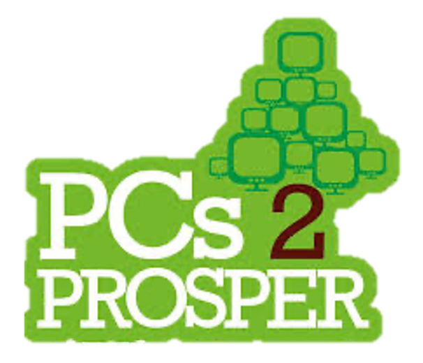

My name is Elijah Whang and I am a junior at BASIS San Antonio - Shavano Campus! I dream of being a researcher in the intersection of User Interface/User Experience (UI/UX) and Artificial Intelligence (AI). I have a passion for increasing the accessibility of electronic systems for the disabled and elderly.
STEM AP Classes (10): Calculus AB & BC, Statistics, Computer Science A, Computer Science Principles, Physics 1 & 2, Physics C: Mechanics/Electricity & Magnetism, Environmental Science
Humanities AP Classes (11): English Language & Language and Composition, Macro- & Microeconomics, Psychology, US Government and Politics, World History, US History, Latin, Human Geography, European History


President and Founder of PC's2Prosper: Founded club that will develop a website that allows businesses to donate computers to schools in need. Companies will also be actively recruited to donate used electronics that will be refurbished before delivery to schools.
Vice President of Mu Alpha Theta: Led meetings and planned events.
Captain of the Varsity Basketball Team: Led the team by directing players and calling plays since sophomore year.
Historian of the National Honor Society: Help plan and organize meetings and events. Responsible for taking pictures and advertising group events.
Regeneron International Science and Engineering Fair Finalist: Tracking Red Blood Cells in Real Time with Deep Learning
Alamo Regional Science and Engineering Fair Senior Division 2nd Grand Prize: Tracking Red Blood Cells in Real Time with Deep Learning
2nd Grand Prize, Individual Project Winner: Schreiner University Scholarship
St. Mary's University Scholarship
Trinity University Scholarship
National AP Scholar
AP Scholar with Distinction
Defensive Player of the Year: BASIS Shavano Varsity Basketball
National Honor Society: BASIS Shavano